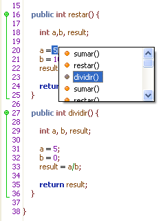

Framework Textual
El Framework Textual (FT) es un framework diseñado para dar soporte a la edición de Código bajo el esquema de programador. Este framework provee las funcionalidades básicas de sintaxis como son resaltado de palabras clave e inserción y auto-completado de código según contexto.
El código se resalta dinámicamente durante la edición, el framework utiliza el esquema de colores convencional de Java© pero en general puede soportar otros esquemas de palabras claves.

Figura 1. Framework textual aplicado al entorno de programación
El auto-completado de código permite insertar declaraciones predefinidas o visualizar información sobre operaciones.

Figura 2. Menú contextual en el Framework Textual
Agregue marcadores y etiquetas al código para expandir la semántica o indicar la existencia de líneas clave como puntos de ruptura o métodos a probar (Depende del Framework Derivado que se utilice).
Figura 3. Vista de Punto de Parada, Framework Derivado IFE
Figura 4. Vista de Anclas Semánticas, Framework Derivado ISE
Este framework provee de la funcionalidad necesaria a otros framework, a los framework de desarrollo que emplean el editor de código para la codificación y ejecución